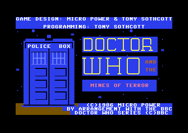

<meta charset="utf-8">
<meta name="viewport" content="width=device-width, initial-scale=1">
<title>Doctor Who and the Mines of Terror</title>
<link rel="preconnect" href="https://fonts.googleapis.com">
<link rel="stylesheet" href="https://fonts.googleapis.com/css2?family=Lato:wght@400;700;900&family=IBM+Plex+Mono:wght@400;500&display=swap">
<link rel="stylesheet" href="reference/dw-page.css">
<!-- tabs -->
<header class="hero">
  <p class="eyebrow">Commodore 64 · 1986 · Micro Power</p>
  <h1>Doctor Who and the Mines of Terror</h1>
  <p class="sub">An arcade adventure in which the Sixth Doctor and Splinx, a robot cat the player programs, take on the Master in a mine on the second moon of Rijar.</p>
</header>
<main class="wrap">
  <section id="adventure">
    <p class="fig">01 · The adventure</p>
    <h2 class="t">The Doctor, a robot cat, and a mine full of heatonite</h2>
    <p>The Master has stolen the Doctor's plans for a Time Instant Replay Unit, or TIRU, a machine that would let its owner interfere with the history of the universe.<sup class="fn"><a href="about.html#src-8" title="Sinclair User, December 1985">8</a></sup> A TIRU runs on heatonite, so the Master has taken over a heatonite mine on the second moon of the planet Rijar.<sup class="fn"><a href="about.html#src-1" title="GameBase64, Zzap!64's review">1</a></sup> The Time Lords send the Doctor to Rijar to take back the plans and shut the mine down, so that the Master can never build his TIRU.<sup class="fn"><a href="about.html#src-3" title="Wikipedia, Doctor Who and the Mines of Terror">3</a></sup> The game ends only when the Doctor escapes alive, in the TARDIS or in an escape pod. How well the Time Lords rate the mission depends on what he achieves first: halting the heatonite machine, and carrying out the CAPSULE that holds the plans, the CRYSTAL, and Splinx. Each of those doubles his bonus (<code>$9102</code>).</p>
    <p>The Doctor explores one huge mine that scrolls in every direction, with four pockets for what he finds and five regenerations to spend. He shares it with Splinx, a robot cat he can program, the Rijans who work the mine, a madrag guarding her eggs, the Master's guard robots, and the Master himself.<sup class="fn"><a href="about.html#src-2" title="Internet Archive, the Amstrad release">2</a></sup><sup class="fn"><a href="about.html#src-8" title="Sinclair User, December 1985">8</a></sup></p>
    <p>Only Splinx is on the Doctor's side. The robot cat fetches what he cannot reach, and the robots and creatures of the mine cannot detect Splinx.<sup class="fn"><a href="about.html#src-1" title="GameBase64, Zzap!64's review">1</a></sup> Everyone else stands in his way. The Rijans hold the PICK AXE he needs, and pass it from one to another as they dig (<code>$C373</code>). The madrag chases him when he comes within 160 pixels of her (<code>$B933</code>). The guard robots, which the game calls controllers, kill him with a touch: A SHOCK FROM A CONTROLLER (<code>controller_touch</code>, <code>$CE08</code>). The Master comes for the CRYSTAL once the Doctor has it, and carries it away (<code>$B48A</code>).</p>
        <figure class="dw-shot"><figcaption>The first screen: the Doctor, Splinx, and the TARDIS.</figcaption></figure>
  </section>
  <section id="release">
    <p class="fig">02 · The release</p>
    <h2 class="t">A BBC Micro game too big for the BBC Micro</h2>
    <p>Gary Partis wrote the game for the BBC Micro. Micro Power asked him, shortly after he turned 18, to write a game like Tony Sothcott's <i>Castle Quest</i>, "a sideways scrolling platform game", but based on Doctor Who. He wrote it during sixth form and his first months at Newcastle Polytechnic.<sup class="fn"><a href="about.html#src-4" title="Gary Partis interviewed by Stuart Goodwin, 2007">4</a></sup> The BBC version came out in 1985 with a ROM chip to fit inside the computer, because the game was too big for the machine's memory.<sup class="fn"><a href="about.html#src-3" title="Wikipedia, Doctor Who and the Mines of Terror">3</a></sup> "The memory requirement was such that constant tape access (disks were not that common then) was impractical," Partis said.<sup class="fn"><a href="about.html#src-4" title="Gary Partis interviewed by Stuart Goodwin, 2007">4</a></sup></p>
    <p>The Commodore 64 and Amstrad CPC versions followed in 1986.<sup class="fn"><a href="about.html#src-3" title="Wikipedia, Doctor Who and the Mines of Terror">3</a></sup> The Commodore version's title screen gives its programming to Tony Sothcott, the author of <i>Castle Quest</i>, and its design to Micro Power and Sothcott.<sup class="fn"><a href="about.html#src-10" title="The original Commodore 64 disk, run in VICE, 3 October 2026">10</a></sup> The Commodore game cost £11.95 on cassette and £14.95 on disk.<sup class="fn"><a href="about.html#src-1" title="GameBase64, Zzap!64's review">1</a></sup> A ZX Spectrum version was announced and never released: in April 1986 Micro Power's Bob Simpson put the delay down to its programmer being pulled off to work on the other versions.<sup class="fn"><a href="about.html#src-6" title="Games That Weren't, Doctor Who and the Mines of Terror">6</a></sup></p>
    <p>Bob Simpson, a former accountant, had set up Micro Power in Leeds in the early 1980s.<sup class="fn"><a href="about.html#src-5" title="Wikipedia, Micro Power">5</a></sup> Micro Power promoted <i>Mines of Terror</i> heavily, and in 2013 <i>The Register</i> wrote that "the huge cost of its development did for Micro Power".<sup class="fn"><a href="about.html#src-7" title="The Register, Antique Code Show, 2013">7</a></sup> Partis was more careful: "Certainly, it caused a financial problem with Micro Power; partially due to the advertising."<sup class="fn"><a href="about.html#src-4" title="Gary Partis interviewed by Stuart Goodwin, 2007">4</a></sup></p>
    <p>Frank Gasking, who records unreleased games, long thought the Commodore version had never come out, because <i>Commodore Force</i> magazine had listed it by mistake in a feature on unreleased games. He later found an original copy.<sup class="fn"><a href="about.html#src-6" title="Games That Weren't, Doctor Who and the Mines of Terror">6</a></sup></p>
      <figure class="dw-shot"><figcaption>The title screen the original disk shows while it loads the game.</figcaption></figure>
  </section>
  <section id="reception">
    <p class="fig">03 · Reception</p>
    <h2 class="t">Four reviews, and a box that promised more than the game</h2>
    <p>Every C64 review remarked on the lavish package, and the reviewers split over whether the game lived up to it. In <i>Commodore User</i> 29, February 1986, Ken McMahon described the £14.95 package: a box "about four times the size required" to hold a cassette, loading instructions for four computers in six languages, a map, and "a piece of coloured card in a plastic holder", the card the <a href="solution.html#lock">code lock</a> needs. The game itself he found "something of a disappointment", and "basically a straightforward platform game". His Splinx "steadfastly refused to carry out my instructions", and when the Doctor was killed "the game just freezes for an interminable fifteen seconds or so".<sup class="fn"><a href="about.html#src-12" title="Commodore User 29, Ken McMahon's review">12</a></sup></p>
    <table class="t">
      <tr><th><i>Commodore User</i>, issue 29</th><th class="n">Stars out of five</th></tr>
      <tr><td>Graphics</td><td class="n">2</td></tr>
      <tr><td>Sound</td><td class="n">2</td></tr>
      <tr><td>Toughness</td><td class="n">3</td></tr>
      <tr><td>Staying power</td><td class="n">4</td></tr>
      <tr><td>Value</td><td class="n">3</td></tr>
    </table>
    <p><i>Zzap!64</i> was far warmer. Its thirteenth issue, dated May 1986, listed the game at £11.95 on cassette and £14.95 on disk, and gave it 86 %. Presentation scored highest, at 92 %, for its "great giant size packaging with loads of interesting bumph", and sound lowest.<sup class="fn"><a href="about.html#src-14" title="Zzap!64 13, the review">14</a></sup><sup class="fn"><a href="about.html#src-3" title="Wikipedia, Doctor Who and the Mines of Terror">3</a></sup> Its three reviewers liked the depth of play far more than the graphics and sound. GP found it "very similar to <i>Castle Quest</i> on the BBC", and GL wrote that once a player gets into it, "it proves enthralling and enjoyable to play", and that it is "one of the best arcade adventures to appear on the 64". The music was the complaint. JR called it "the big niggle", "the horrible music which burbles away throughout the game, although it does get better when the Doctor enters another section of the map", and GP called it "the ubiquitous tune that migrainly rattles away while you play". The sound rating asked, "Where's the famous tune?"<sup class="fn"><a href="about.html#src-14" title="Zzap!64 13, the review">14</a></sup></p>
    <table class="t">
      <tr><th><i>Zzap!64</i>, issue 13</th><th class="n">Score</th></tr>
      <tr><td>Presentation</td><td class="n">92 %</td></tr>
      <tr><td>Graphics</td><td class="n">70 %</td></tr>
      <tr><td>Sound</td><td class="n">32 %</td></tr>
      <tr><td>Hookability</td><td class="n">81 %</td></tr>
      <tr><td>Lastability</td><td class="n">89 %</td></tr>
      <tr><td>Value for money</td><td class="n">81 %</td></tr>
      <tr><td><b>Overall</b></td><td class="n"><b>86 %</b></td></tr>
    </table>
    <p><i>Computer and Video Games</i> 55, the same month, sided with <i>Commodore User</i>. Its review noted the box "the size of a videocassette" and "a decent amount of documentation", but "no amount of flash can cover up a lacklustre game", and called it "this ordinary adventure". The one big plus was "its sheer scale": about 130 screens in ten areas, of which the review said "Map maniacs will find it a delight". It gave the game 7 out of 10 for graphics, sound, value, and playability alike.<sup class="fn"><a href="about.html#src-15" title="Computer and Video Games 55, the review">15</a></sup></p>
    <p><i>Your Commodore</i> 21, June 1986, sided with <i>Zzap!64</i>. Its reviewer, J.G., found the challenges "difficult but logical", singled out "the casual lope of the Doctor", and praised the documentation, which included "a sealed solution to the Madrag problem". The music fared no better. The pre-publicity had promised the familiar <i>Doctor Who</i> theme, and the review answered: "if this is true then I'm a toreador." J.G. advised playing "with the volume turned off", yet still ended: "apart from the nagging music, I wholeheartedly recommend this game."<sup class="fn"><a href="about.html#src-13" title="Your Commodore 21, J.G.'s review">13</a></sup> The <a href="music.html">Music</a> tab plays the tunes.</p>
    <table class="t">
      <tr><th><i>Your Commodore</i>, issue 21</th><th class="n">Rating out of 10</th></tr>
      <tr><td>Originality (the light bulb)</td><td class="n">5</td></tr>
      <tr><td>Playability (the joystick)</td><td class="n">6</td></tr>
      <tr><td>Graphics (the flag)</td><td class="n">8</td></tr>
      <tr><td>Value for money (the money bag)</td><td class="n">8</td></tr>
    </table>
  </section>
  <section id="explore">
    <p class="fig">04 · Inside the game</p>
    <h2 class="t">Explore how Doctor Who and the Mines of Terror works</h2>
    <p>Each tab takes one part of the game apart, from the game's own code.</p>
    <ul>
      <li><a href="gameplay.html"><b>Gameplay</b></a>: what the Doctor must do, every object and what it is for, programming Splinx, the lift and the car, the nine ways to lose a regeneration, and how the Time Lords score the escape (<code>$9102</code>).</li>
      <li><a href="controls.html"><b>Controls</b></a>: the joystick and keys (<code>$8F24</code>), and how far the Doctor can <a href="controls.html#jump">jump and fall</a>.</li>
      <li><a href="levels.html"><b>Maps</b></a>: the whole mine, <a href="levels.html#mine">drawn from the map</a> the game keeps under its operating system (<code>$E000</code>), with every object, danger, and restart point on it.</li>
      <li><a href="solution.html"><b>Solution</b></a>: <a href="solution.html#solution">what to carry out</a>, how to stop the heatonite machine, the two ways home, and the code lock and its card (<code>$BD6F</code>).</li>
      <li><a href="graphics.html"><b>Graphics</b></a>: every sprite in the game, the Doctor's walking frames, the TARDIS landing, and how one frame is built from two screens (<code>$8010</code>).</li>
      <li><a href="music.html"><b>Music</b></a>: the five tunes, playable through the game's own music player (<code>$74EA</code>), and which part of the mine plays each.</li>
      <li><a href="discoveries.html"><b>Discoveries</b></a>: a time bonus that barely moves, a save that ends the game, tests that want one exact pixel, and leftovers.</li>
      <li><a href="source.html"><b>Source code</b></a>: the whole game disassembled and annotated.</li>
    </ul>
  </section>
</main>
